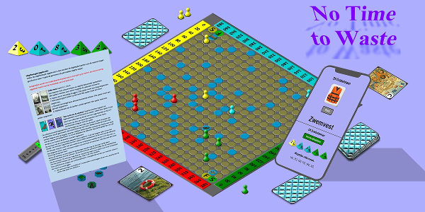

No Time To Waste
Escape to Higher Ground

No Time To Waste - Escape to Higher Ground
Na een lange periode van ontwikkelen, testen en verfijnen is het eindelijk zover:
No Time To Waste (NTTW) is nu beschikbaar in onze webshop!
Het spannende bordspel waarin spelers moeten overleven in een wereld die langzaam door het water wordt verzwolgen.
Solo als tegenstanders of coöperatief, bereik gezamenlijk de finish.
Welke variant je ook kiest, volledig of aangepast aan speelduur of spelers niveau, NTTW heeft het allemaal en zal zeker niet teleurstellen.
No Time To Waste - Pentagon
De nieuwe Pentagon-variant van NTTW biedt ruimte aan vijf spelers en maakt het spel strategischer.
Ideaal voor gezinnen of vriendengroepen die samen willen strijden in een uniek speelveld.
Deze variant is in de laatste fase van ontwikkeling en zal binnenkort verkrijgbaar zijn.
NTTW Pentagon, als je het vijfde wiel aan de wagen wilt zijn!
No Time To Waste - Hexagon

De Hexagon-uitbreiding breidt het bord uit naar zes zijden, waardoor er nóg meer spelers en uitdagingen
mogelijk zijn. Met verrassende nieuwe spelmogelijkheden en extra dynamiek.
Dit bord is in de beginfase van ontwikkeling en design. Meld je aan zodat je de ontwikkeling op de voet kan volgen.
HTTW Hexagon voor als vijf niet voldoende is!
No Time To Waste - IJstijd
Wat als niet het water, maar de kou oprukt? In dit scenario kantelt de aarde en verandert het klimaat op het Noordlijk Halfrond in een ijzige nachtmerrie. Nieuwe structures en uitdagingen wachten op ontdekking. NTTW Een Nieuwe IJstijd is nog in ontwikkeling, maar de kou komt onherroepelijk dichterbij…
No Time To Waste - Exodus naar Mars
Wanneer de aarde definitief onleefbaar wordt, rest de mensheid nog één uitweg: de sprong naar Mars. Maar ook daar is overleven niet vanzelfsprekend. Exodus naar Mars is een visie op de toekomst van NTTW – nog slechts een idee, maar misschien wel de volgende reis.